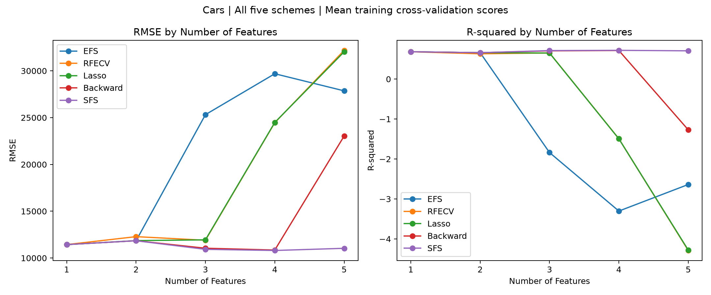
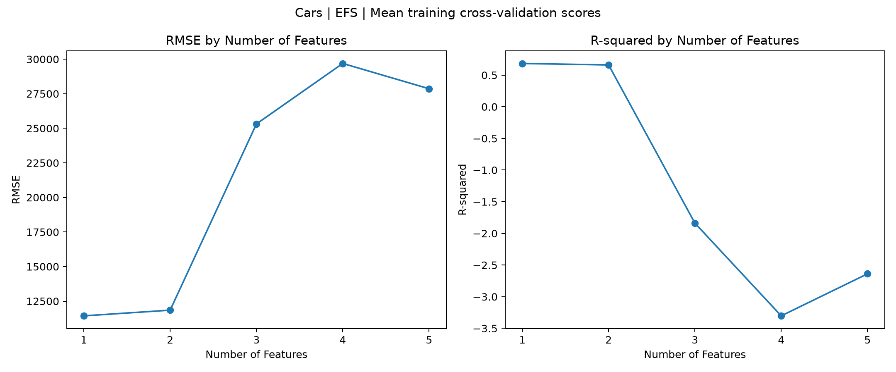
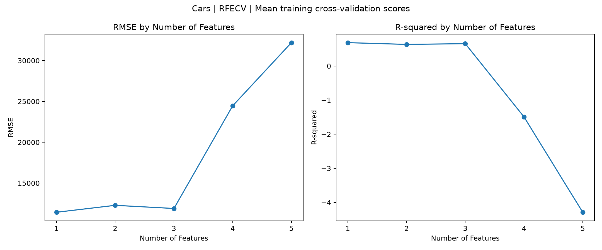
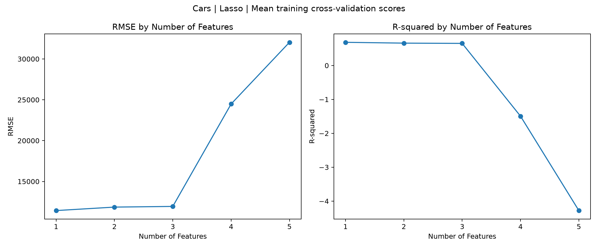
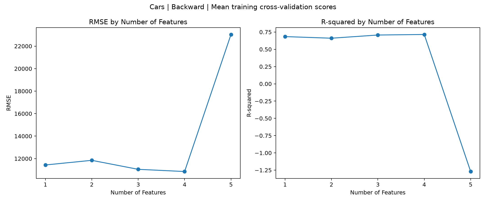
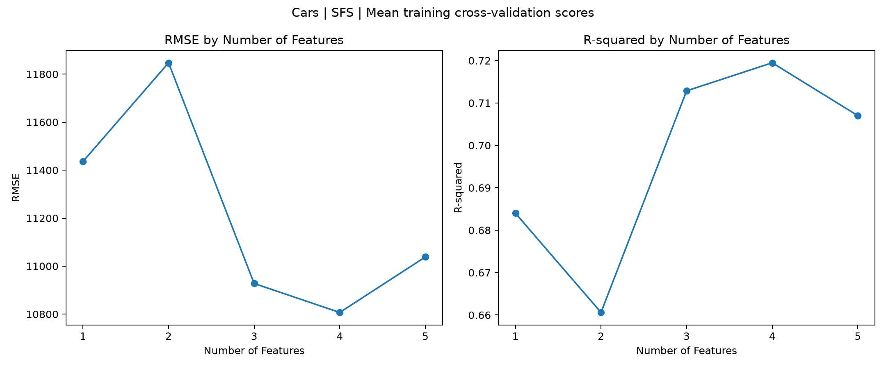

RMSE 與 R² 為相同訓練資料外層三折交叉驗證的平均分數，每折重新執行前處理和特徵選擇。 表格列出完整訓練集選出的特徵，各折特徵可能不同。此比較不使用測試集、不改變原本模型選擇。 固定數量版本的差異註明於各方法下方。RMSE 越低越好，R² 越高越好，負值會如實保留。

先以訓練資料 F 分數篩出 8 個候選特徵，再以內層交叉驗證窮舉各固定數量的組合。
| Number of Features | Selected Features | RMSE | R-squared |
|---|---|---|---|
| 1 | [Horsepower(HP)] | 11435.860273 | 0.684009 |
| 2 | [Horsepower(HP), Brand_Mercedes-Benz] | 11847.393263 | 0.660602 |
| 3 | [Horsepower(HP), Highway Miles Per Gallon, Brand_Mercedes-Benz] | 25318.467728 | -1.838539 |
| 4 | [RWD, Horsepower(HP), Highway Miles Per Gallon, Brand_Mercedes-Benz] | 29689.682277 | -3.302716 |
| 5 | [RWD, Horsepower(HP), Highway Miles Per Gallon, Weight, Brand_Mercedes-Benz] | 27861.852706 | -2.638423 |

固定數量曲線採用 RFE 逐一遞迴刪除；原本 RFECV 自動選取數量的實驗保留不變。
| Number of Features | Selected Features | RMSE | R-squared |
|---|---|---|---|
| 1 | [Horsepower(HP)] | 11435.860273 | 0.684009 |
| 2 | [Horsepower(HP), Brand_Mercedes-Benz] | 12284.892637 | 0.632614 |
| 3 | [Horsepower(HP), Brand_Mercedes-Benz, Brand_Porsche] | 11899.555346 | 0.654202 |
| 4 | [Engine Size (l), Horsepower(HP), Brand_Mercedes-Benz, Brand_Porsche] | 24459.747191 | -1.492832 |
| 5 | [Engine Size (l), Cyl, Horsepower(HP), Brand_Mercedes-Benz, Brand_Porsche] | 32191.289266 | -4.289341 |

依 LassoCV 的標準化係數絕對值取前 k 個；相同或零係數以標準化 OLS 係數排序，再以線性迴歸擬合。
| Number of Features | Selected Features | RMSE | R-squared |
|---|---|---|---|
| 1 | [Horsepower(HP)] | 11435.860273 | 0.684009 |
| 2 | [Horsepower(HP), Brand_Mercedes-Benz] | 11860.820788 | 0.659793 |
| 3 | [Horsepower(HP), Weight, Brand_Mercedes-Benz] | 11943.846822 | 0.651938 |
| 4 | [Horsepower(HP), Weight, Brand_Mercedes-Benz, Brand_Porsche] | 24485.500531 | -1.494671 |
| 5 | [Horsepower(HP), Highway Miles Per Gallon, Weight, Brand_Mercedes-Benz, Brand_Porsche] | 32035.588486 | -4.278729 |

每次刪除 OLS p 值最大的特徵，直到剩下 k 個；固定數量比較不使用 0.05 提前停止規則。
| Number of Features | Selected Features | RMSE | R-squared |
|---|---|---|---|
| 1 | [Horsepower(HP)] | 11435.860273 | 0.684009 |
| 2 | [Horsepower(HP), Brand_Mercedes-Benz] | 11847.393263 | 0.660602 |
| 3 | [Horsepower(HP), Brand_Mercedes-Benz, Brand_Porsche] | 11047.768849 | 0.706723 |
| 4 | [Horsepower(HP), Highway Miles Per Gallon, Brand_Mercedes-Benz, Brand_Porsche] | 10853.603182 | 0.714890 |
| 5 | [Horsepower(HP), Highway Miles Per Gallon, Wheel Base, Brand_Mercedes-Benz, Brand_Porsche] | 23038.441075 | -1.269670 |

沿用原有 SFS：先篩出 15 個候選特徵，再以內層交叉驗證向前選取 k 個。
| Number of Features | Selected Features | RMSE | R-squared |
|---|---|---|---|
| 1 | [Horsepower(HP)] | 11435.860273 | 0.684009 |
| 2 | [Horsepower(HP), Brand_Mercedes-Benz] | 11847.393263 | 0.660602 |
| 3 | [Horsepower(HP), Highway Miles Per Gallon, Brand_Mercedes-Benz] | 10927.721033 | 0.712861 |
| 4 | [Horsepower(HP), Highway Miles Per Gallon, Brand_Mercedes-Benz, Brand_Porsche] | 10807.039194 | 0.719478 |
| 5 | [Horsepower(HP), Highway Miles Per Gallon, Brand_Jaguar, Brand_Mercedes-Benz, Brand_Porsche] | 11038.265470 | 0.707014 |
